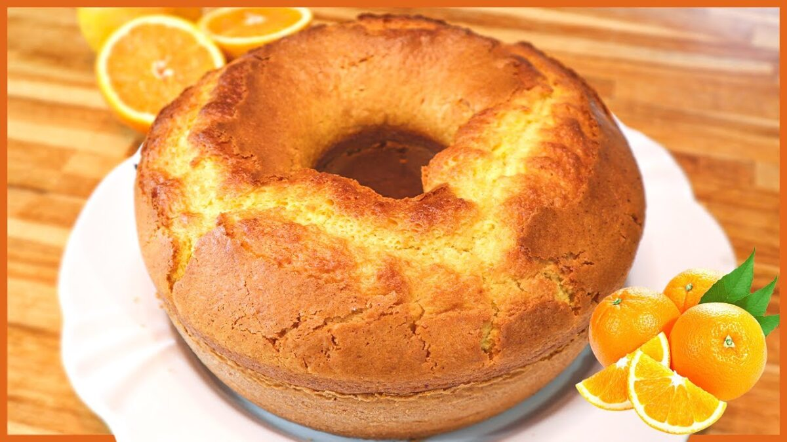

Bolo de Laranja

Ingredientes
Massa
- 2 xícaras de farinha de trigo
- 1 xícara de açúcar
- 1 colher de sopa de fermento em pó
- 1 pitada de sal
- 3 ovos
- 1 xícara de suco de laranja natural
- 1/2 xícara de óleo
- Raspas de 1 laranja
Cobertura
- 1 xícara de açúcar de confeiteiro
- 2 a 3 colheres de sopa de suco de laranja
Passo a passo
Massa
- Preaqueça o forno a 180°C.
- Em uma tigela, misture os ingredientes secos: farinha, açúcar, fermento e sal.
- Adicione os ovos, o suco de laranja, o óleo e as raspas de laranja. Misture bem até obter uma massa homogênea.
- Despeje a massa em uma forma untada e enfarinhada.
- Leve ao forno por cerca de 35 a 40 minutos, ou até que um palito saia limpo.
- Retire do forno e deixe esfriar antes de colocar a cobertura.
Cobertura
- Em uma tigela, misture o açúcar de confeiteiro com o suco de laranja até obter uma calda espessa.
- Despeje sobre o bolo já frio.
Página Principal